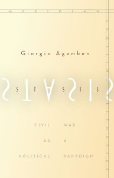

Agamben, Giorgio. Stasis: Civil War as a Political Paradigm (Meridian: Crossing Aesthetics). Translated by Nicholas Heron. Stanford: Stanford University Press, 2015. ISBN 10: 0804797315 Hardcover, paperback, e-book. 96 pages.
Giorgio Agamben’s Stasis is yet another addition to his Homo Sacer project. This time Agamben tackles what he sees as yet another lacuna in political theor y: the absence of a science of civil war as something in-between theories of war (‘polemology’) and peace (‘irenology’). That science would be called ‘stasiology’. At the same time, the book is also markedly different from the other outputs of the Homo Sacer project. Strictly speaking, it is not even a proper book and clearly not a new contribution. Instead, these are two lectures dating back to 2001.
In fact, the ‘non-book’ character of Stasis is both apparent and, at times, frustrating: it is more of a testing ground where ideas are played out. Hence, one should not expect a full-fledged establishment of the absent science of civil war. Instead, this remains largely a ‘do it yourself’ book: the paradigmatic character of civil war, suggested in the subtitle, remains underdeveloped, and the applicability of stasis as global civil war to today’s realities is very much implicit.
And yet, Agamben does offer the necessary building blocks, thus challenging the reader to finish the job on their own. This challenge is perhaps intentional – after all, a thinker of Agamben’s calibre is more than likely to have noticed the supposed incompleteness of the book.
Two possible explanations suggest themselves. One is that such absence is purely technical, caused by the two-lecture format to which Agamben simply did not see the need to add anything. The other, meanwhile, takes into account the very nature of stasis as such. Considered in this way, the open-ended DIY structure is the only logical one: only it can do justice to stasis as a marker of indistinction or indifference.
Methodologically, Agamben does what he does best (and has mastered throughout the years because that is his strategy in more or less every book) by taking something very concrete – a particular concept, distinction, or image – and pronouncing it to be the paradigm for something grandiose, thereby exploding the micro-macro distinction. In this particular case, he is concerned with the use of the word stasis in Ancient Greece and the frontispiece of the first edition of Thomas Hobbes’ Leviathan.
Stasis, as Agamben argues inspired by Nicole Loraux’s exposition of the term, signals a zone of indifference between oikos and polis, the family which is non-political and the polis which is, of course, political. Thus stasis is seen as a threshold of (de)politicisation, whereby the non-political passes into the political and vice versa. Essentially, then, stasis – civil war – is the means through which previously non-political things become political, and the entire political sphere is renewed.
Moreover, stasis can never be resolved – the movement between politicisation and depoliticisation is constant. Of course, it is relatively easy to comprehend how stasis works domestically—but how about global civil war, which Agamben (following Arendt and Schmitt) sees as the condition of today? Agamben’s answer, albeit, as noted above, lacking concrete detail, is that stasis in our world takes the form of terrorism.
That, of course, is an observation that was extremely poignant when the lectures were delivered back in 2001 and is just as poignant today. However, in order to fully appreciate the significance of terrorism as today’s stasis, one has to reconsider the state, which Agamben does through delving into modern political philosophy’s state par excellence – Hobbes’ Leviathan-state.
In the second of the two lectures Agamben offers a rereading of Hobbes’ Leviathan through an interpretation of the frontispiece of its first edition. In this rereading, political community is seen as an optical illusion and the sovereign as existing somewhere outside and simply instituting order over a dissolved multitude. Hence, instead of playing a positive role – as the commonplace interpretation would suggest – Agamben’s Hobbesian state in fact acts as an agent of antichrist, bringing forward the end of history (hence the choice of the name of a biblical beast).
This is a potentially contentious interpretation which is, nevertheless, given with careful consideration of the text and admirable erudition (both attributes being characteristic to Agamben’s entire corpus of work). However, one would expect a broader engagement with the Leviathan that goes beyond selected passages as well as with Hobbes’ other political writings before accepting such a hypothesis unreservedly. At the moment, Agamben’s reading should more safely be treated as a suggestion.
Stasis would then refer to a point of indifference – or transition – between the political public and the dissolved multitude, whereby the multitude can create a body politic only to be dissolved back into the multitude by that same act. Stasis is what mediates between the fundamental concepts of Hobbesian theory: the Commonwealth and the state of nature.
This is also why, as suggested earlier, stasis is constant: because no unity, no body politic is possible, stasis always lurks in the background. And the tool for maintaining such status quo is, as is well-known from Agamben’s other writings, the exception. The strength of such thinking, of course, is premised upon the acceptance of the above reinterpretation of the Hobbesian state – and, again, there is just too little grounding in such a short study. Ultimately, one simply chooses whether to take Agamben’s word for it or not.
And then, perhaps to tie the strings together, comes another story: just like the kingdom of God comes after the struggle between (and mutual destruction of) the two monsters – Leviathan and Behemoth (a struggle that itself can be at least roughly equated with stasis), the dissolution of the Leviathan-state is necessary for the political redemption of humanity. And here one must ask: if global civil war is the new paradigm, is today’s stasis between the vestiges of state-centric politics and terrorism in fact the struggle between Leviathan and Behemoth, due to end in their mutual destruction and precipitating the advent of the kingdom of God?
Agamben does not claim that explicitly but such conclusion seems absolutely plausible. Indeed, if that was the case, this suggestion could be seen as a major innovation, opening up a completely new avenue of looking into world politics.
In short, Stasis is both a potent and frustrating book. It is frustrating because Agamben does more to provoke one’s thinking than to direct it in a particular way. And yet, if one knows where to look and is able and willing to think and to interpret the text, some crucial insights into the complexities of today’s world can be discovered. And that is, perhaps, one of the greatest joys of theory.
Ignas Kalpokas is currently a lecturer at Vytautas Magnus University and adjunct faculty member at LCC International University and ISM University of Management and Economics. His main research areas include (1) tensions between the constituent and the constituted power in modern democracies, concentrating primarily on the issues of political ordering; (2) international political theory, especially the history and practice of sovereignty and modern challenges to sovereignty; (3) cyber security, cyber regulation, and information warfare; 4) identity formation and politics. His latest articles deal with neo-medievalism in today’s international order, reconfiguration of sovereignty in modern politics, and the use of social media in information warfare.